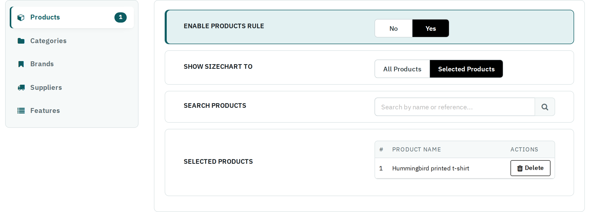

Decides which products show the chart. There is one sub-tab per rule type: Products, Categories, Brands, Suppliers and Features. A number next to a sub-tab tells how many items it lists.

| Field | What it does |
|---|---|
| Enable … Rule | Yes uses this rule type for the chart. While it is No, the other fields of that rule are hidden. |
| Show Sizechart to | All …: every product (or every product with a category, brand, supplier or feature). Selected …: only the items you pick below. |
| Search … | Type at least two letters of a name (or a product reference) and pick from the results. Click the search button or press Enter to search at once. |
| Selected … | The items the rule lists; Delete removes one. |